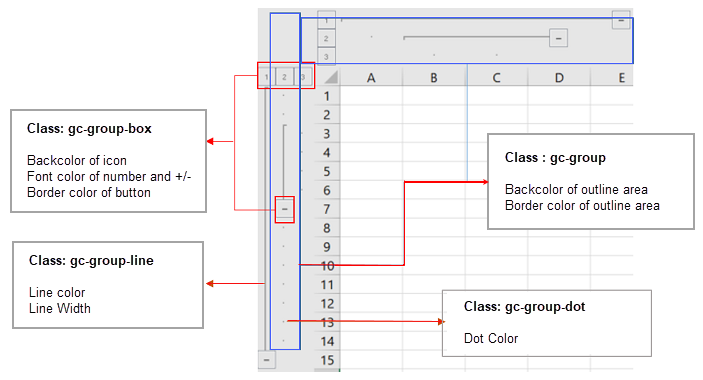

SpreadJS supports the customization of range groups in order to enhance the appearance of the worksheet while also making it easy for users to organize and manipulate data in an efficient way.
You can set the custom background color, border color outline area, background color of the icon, font color of number and +/-, background image of the number and +/-, border color of the button, line color, line width and dot color as depicted in the below image:
Shared below is a table that lists the attributes of range groups that can be customized along with the corresponding CSS class and the CSS attribute:
| Range Group Attribute | CSS class Name | CSS Attribute | Additional Comments |
| Backcolor of outline area |
gc-group |
background-color | |
|
Border color of outline area |
color | ||
| Backcolor of icon |
gc-group-box |
background-color | |
| Font color of number and +/- | color | ||
| Border color of button | border-color | This attribute will use the border-top-color from the CSS and will ignore any other border color. | |
| BackgroundImage of number and + | gc-group-box-expand | background-image |
The default border color and background color is transparent when the background-image is set by user. If no background image is set, it will use the style defined in the gc-group-box, by default. If the defined CSS includes more than one background image, only the first background image will take effect. |
| BackgroundImage of number and - | gc-group-box-collapsed | background-image |
The default border color and background color is transparent when the background-image is set by user. If no background image is set, it will use the style defined in the gc-group-box, by default. If the defined CSS includes more than one background image, only the first background image will take effect. |
| Line color |
gc-group-line |
border-color | This attribute will use the border-top-color from the CSS and will ignore any other border color. |
| Line Width | border-width | This attribute will use the border-top-width from the CSS and will ignore any other border color. | |
| Dot Color | gc-group-dot | color |
Refer to the example shared below in order to customize the attributes of range groups while working with spreadsheets:
| JavaScript |
Copy Code
|
|---|---|
<style>
.gc-group {
background-color: rgb(180, 211, 230);
color: #999999;
border-width: 0px;
border-style:solid;
}
.gc-group-box {
background-color: #fff;
color: rgb(8, 154, 245);
border-color:rgb(32, 158, 241);
}
.gc-group-line{
border-width:2px;
border-style:solid;
border-color:rgb(137, 199, 243);
}
.gc-group-dot{
color:blue;
}
</style>
|
|